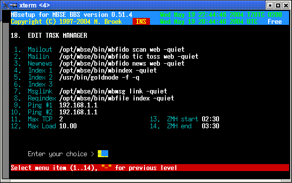

Last update 19-May-2004
MBSE BBS Setup - Task Manager.
Introduction
The task manager is the daemon which controls the MBSE BBS. It watches semafore's and spawns programs in the background. It also watches the outbound to see if there are nodes to call. The behaviour is setup in this screen.
Edit Task Manager
Mailout Action for semafore mailout. Mailin Action for semafore mailin. Newnews Action for semafore newnews. Index 1 Nodelist compiler 1 for semafore mbindex. Index 2 Nodelist compiler 2 for semafore mbindex. Index 3 Nodelist compiler 3 for semafore mbindex. Msglink Action for semafore msglink. Reqindex Action for semafore reqindex. Ping #1 IP address of node to ping to check the internet. Ping #2 IP address of second node to ping to check the internet. Max TCP Maximum simultaneous outgoing calls over the internet. Max Load Max system load until processing is suspended. ZMH start Start of Zone Mail Hour in UTC time. ZMH end End of Zone Mail Hour in UTC time.
Default are the original MBSE commands filled in, but you could also call shell scripts.
The two IP addresses to ping need to be IP addresses, not hostnames. This is the
most reliable way to check the connection. You should enter the IP addresses of
the nameservers of your own ISP here. One of these will always be up, so if one
of these can be reached, the internet connection is assumed to be alive. The
status of the internet connection is used to decide if it is allowed (and
possible) to call TCP/IP nodes. Calling these nodes is not depending on ZMH
unless the destination is not a CM node.
The max load setting decides at which system load point processing of background
tasks will be suspended. The default value should be allright for machines slower then 200
MHz or with low ram. On faster machines you may set this value higher.

 Back to index
Back to index